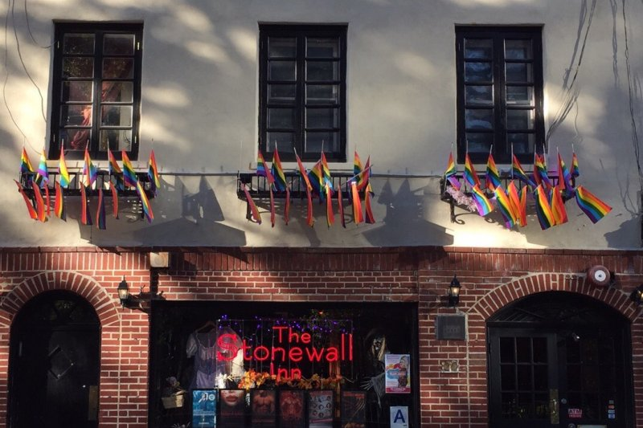
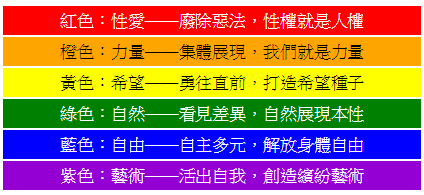
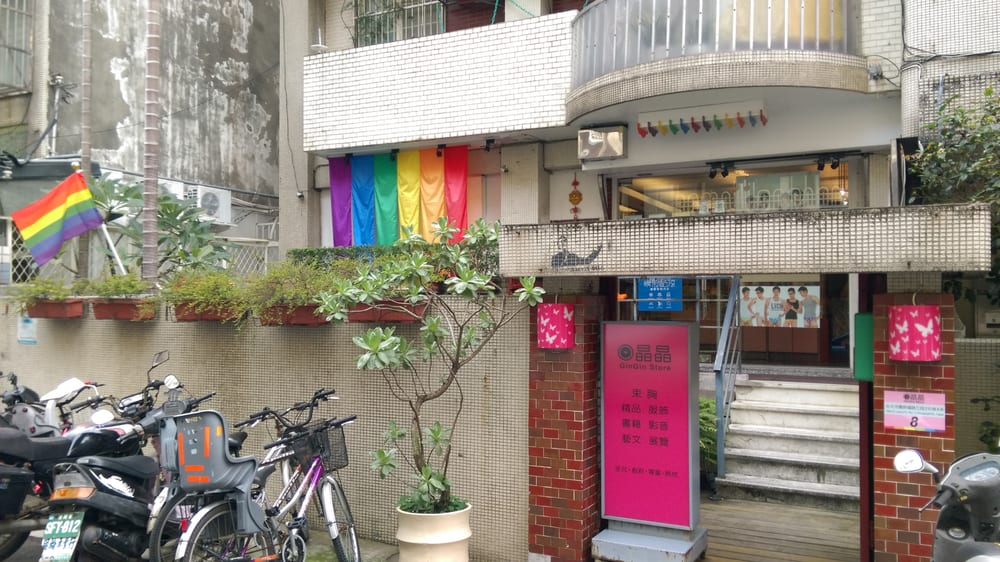
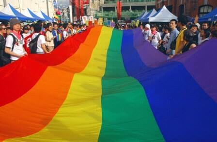
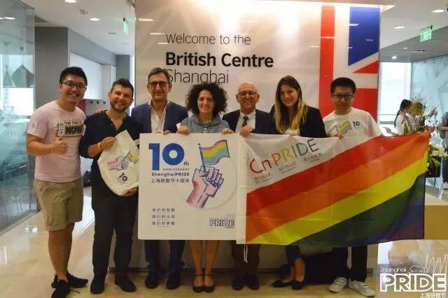
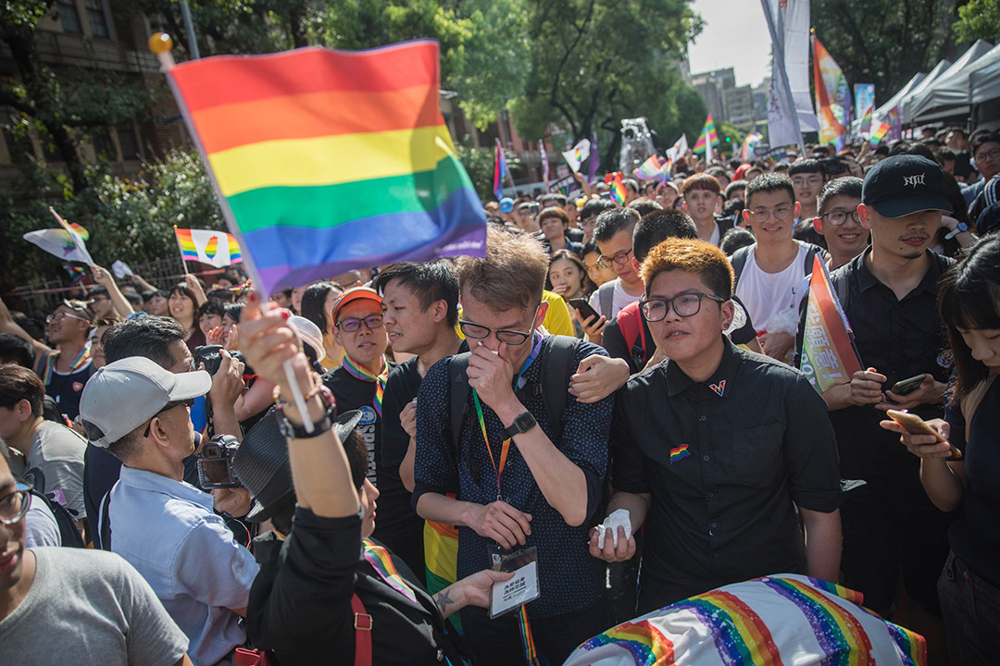

1960年代
社會運動及民權運動過後，逐漸凝聚為一個爭取平權的身份認同群體，產生了一些區別其他社會群體的次文化。
社會運動及民權運動過後，逐漸凝聚為一個爭取平權的身份認同群體，產生了一些區別其他社會群體的次文化。
紐約的「石牆事件紀念遊行」。
舊金山同志遊行，彩虹旗象徵。
湯姆·沃德維爾創辦於舊金山，目標是發揚包容和參與的精神，以及在運動會中追求個人的成長卓越。
紀念世界衛生組織（WHO）將同性戀從國際疾病與相關健康問題統計分類中刪除，該活動希望喚醒世人，關注因性傾向及性別認同，而產生一切加在肉體上及精神上的暴力及不公平對待。
因此5月17日為國際不再恐同日。
晶晶書庫創立，第一家同志書店，是華人地區同志運動的先驅之一，也是台灣重要同志運動的象徵。
亞洲同志運動會：由馬來西亞和新加坡的同志組織發起，目標是在同志族群中推廣友誼和健康的生活方式
台北的台灣同志遊行，華人地區首次同志遊行活動。
世界同志運動會：由同性戀國際體育協會舉辦，該屆運動會同時也發布了一份LGBT人權文件蒙特婁宣言
台北與東京、曼谷一同被知名同志雜誌《OUT》評為「亞洲對同志最友善的城市」之一。
首次香港同志遊行。
上海驕傲周以及新加坡、香港粉紅點運動。
男女同性戀體育名人堂：紀念對體育活動有傑出貢獻和努力成就的LGBT人物和體育組織
此部經過多方折衝的同婚法案通過後，台灣通過同婚專法,將成亞洲首個同志婚姻合法化的國家。
